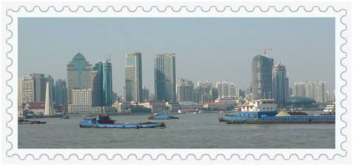
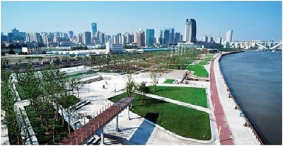

骑行俱乐部之七宝古镇 召集
时间：4月4日一天
线路：龙阳路地铁站-> 南码头渡轮->陆家浜路渡轮->徐汇滨江-> 七宝古镇， 单程23km
景点：1. 渡口：可能很多高大上的同事们都还没有感受过浦江轮渡吧，这次可以好好体验一番了。
2. 徐汇滨江：骑着豪车，穿行于黄浦江边，美景尽收眼底，何等的潇洒！
3 七宝古镇：典雅素朴的江南小镇，领略千百年前的大上海。另外，七宝小吃很多，馋嘴的妹子们有福了。


俱乐部可以提供单车，如果自己有爱车，建议用自己的车。头盔，手套，水俱乐部都有提供。
4月4号是阵雨天气，骑行没问题。没有大太阳，妹子们也不用担心被晒到。很适合骑行。
报名方式：回复本邮件，格式为：姓名-自己有没有车，如“谢杨易-有车”
报名时间：截止到4月2日下午五点。
集合地点：龙阳路地铁站捷安特专卖店（杜鹃路395号），自带车的童鞋需要自己把车骑过去，很近的。
集合时间：4月4日上午九点半
注意：带好自己的公交卡，做轮渡的时候要用到的。